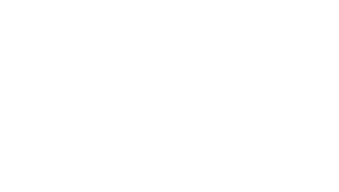

Запитання про AI, пропозиція теми або уточнення до матеріалу – привід для звернення до редакції Zarrin.
Наведені контакти умовні та призначені для навчального проєкту, а не для зв’язку з реальною організацією.
Івано-Франківськ, вул. Незалежності, 34, Україна
editorial@zarrin.example
099 999 99 99

Генеративні моделі, комп’ютерний зір, AI-помічники та відповідальне використання технологій – теми для вдумливого знайомства зі штучним інтелектом.